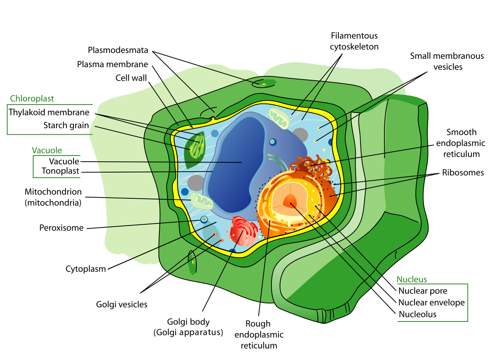
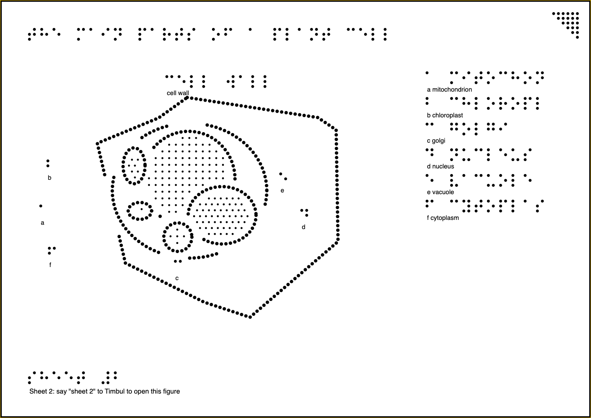

Timbul
Every figure,
for every student.
One photo of a textbook page becomes a raised-dot sheet a blind student can feel, and ask about by voice.
Gemini on Google Cloud
AI Builder Cup 2026

The textbook figure

Timbul's tactile sheet